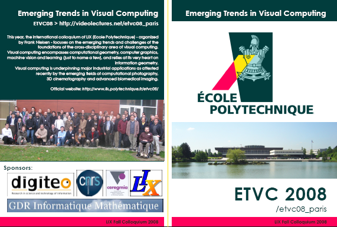
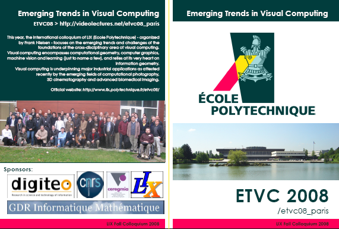

Video lectures of the speakers (including Q&A sessions).
Video lectures of the speakers (including Q&A sessions).
The recorded lectures are also available offline in an ISO DVD. 
The annual colloquium organized by the computer science department of Ecole Polytechnique (LIX) took place at Ecole Polytechnique
(on-site at Palaiseau, a suburb district of Paris) at the Pierre Faure auditorium on November 18-20, 2008.
The colloquium gathered 160+ participants. Thank you to all of you!
(access the old welcome home page, prior to the conference)
The international colloquium of LIX (Ecole Polytechnique) focused on the emerging trends and challenges of the foundations of the cross-disciplinary area of visual computing. Visual computing encompasses computational geometry, computer graphics, machine vision and learning (just to name a few), and relies at its very heart on information geometry. Visual computing is underpinning major industrial applications as attested recently by the emerging fields of computational photography, 3D cinematography and advanced biomedical imaging.
Video lectures of the speakers (including Q&A sessions).
The recorded lectures are also available offline in an ISO DVD. 